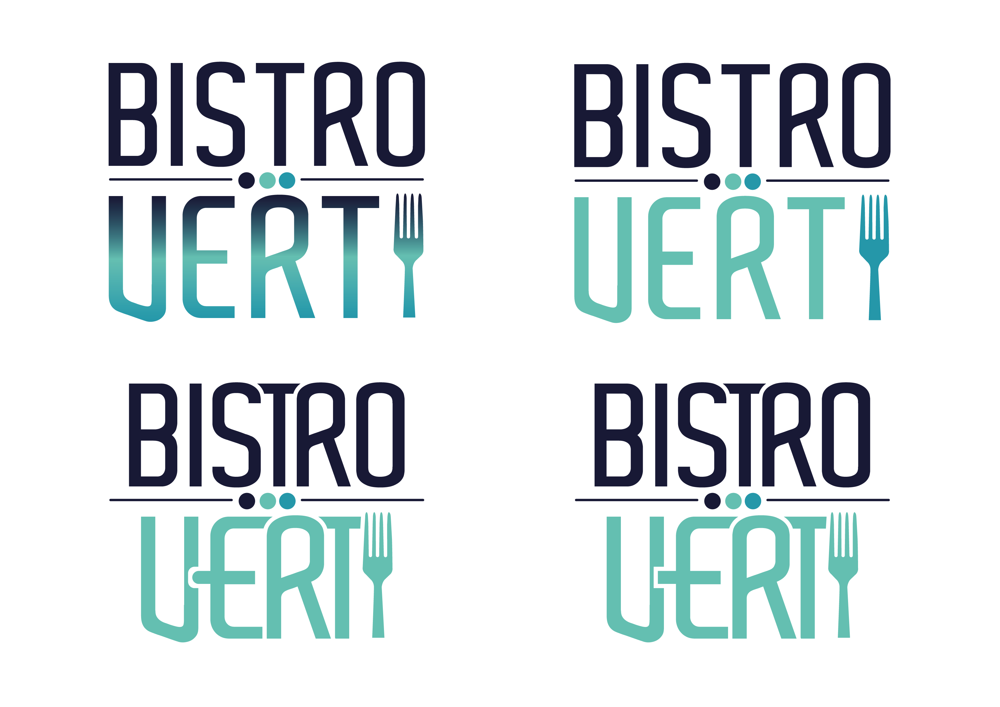
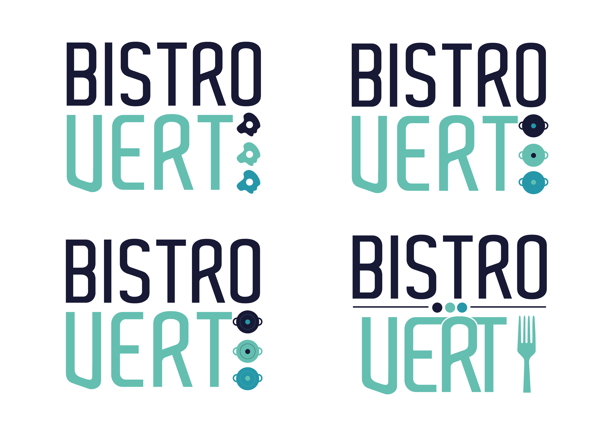
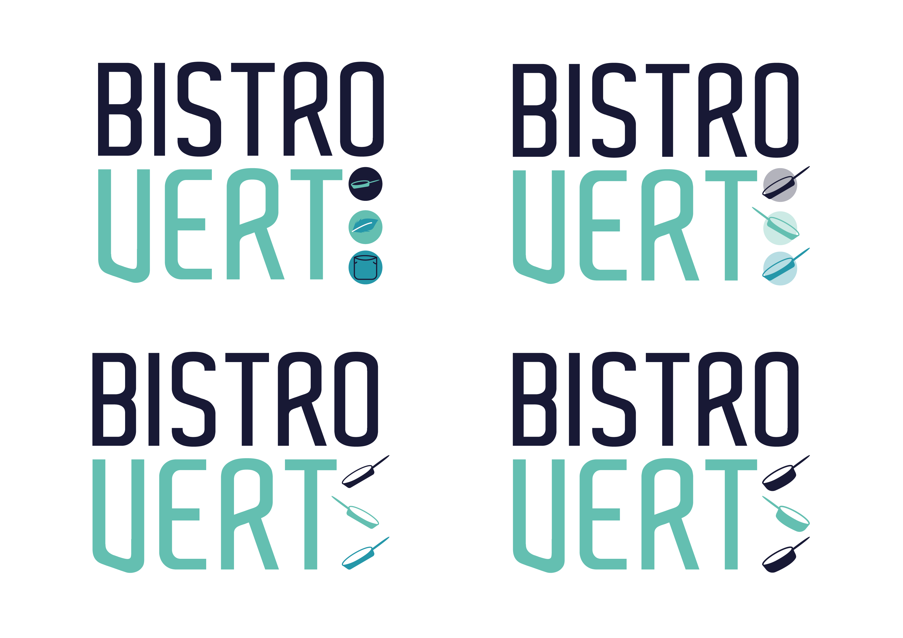
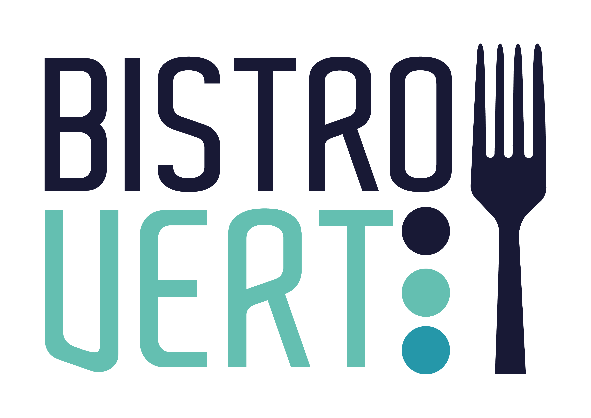
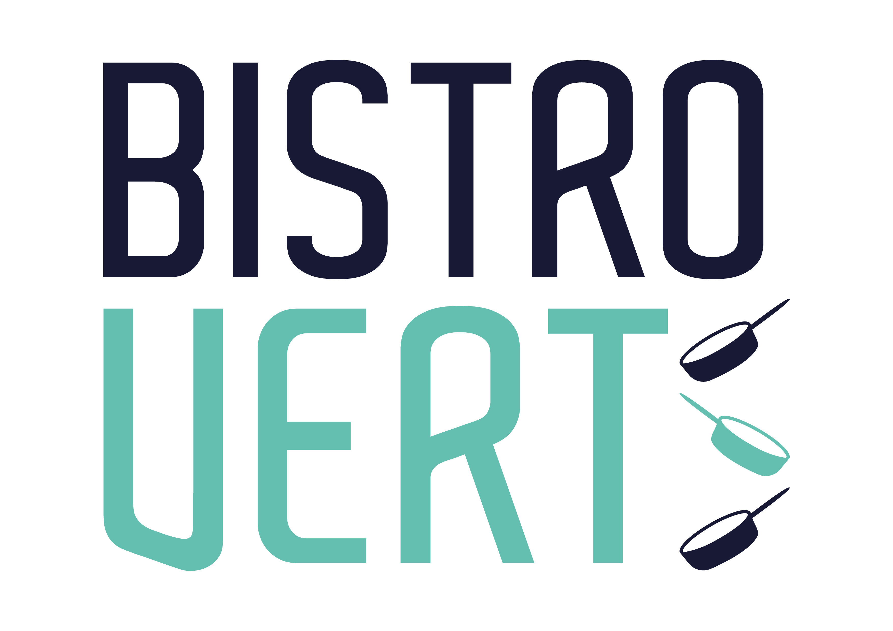
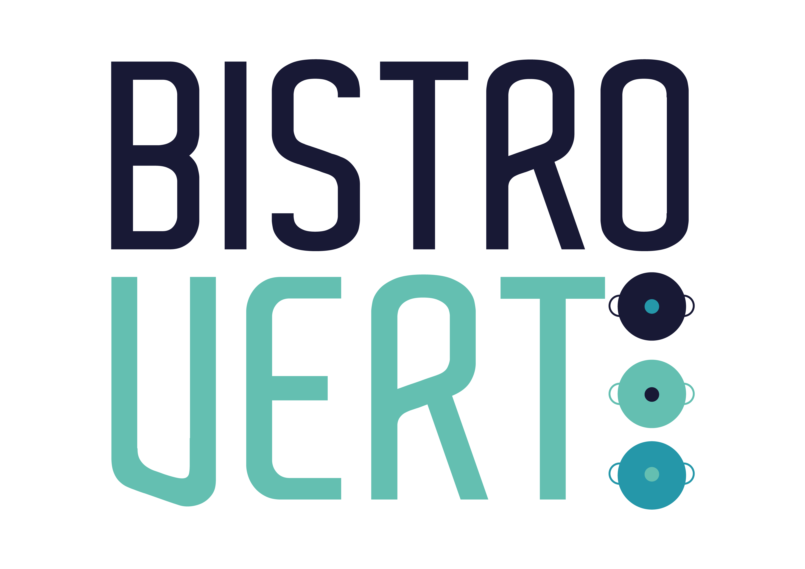

Bistro Vert
Logo – 2025
Voor Bistro Vert een school van de scholengroep Adite heb ik mee we logo's ontworpen, dit is voor een leer onderneming van Site-A. Dit aan de hand van de huisstijl en een paar andere wensen. De 3 laatste logo's zijn gekozen om door te sturen maar zijn het niet geworden.
28-11-2024 - 29-11-2024





